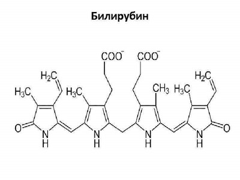

Функции:
Продукт распада эритроцитов.
Локализация:
Кровь, образуется в результате распада эритроцитов. Образуется в ходе расщепления железосодержащего гема вследствие разрушения эритроцитов или гемопротеинов. Может под действием ферментов превращаться в неконъюгированный билирубин, а в гепатоцитах под действием УДФ-глюкуронилтрансферазы переходит в конъюгированный билирубин.
Билирубин является пигментным ферментом. Содержание общего билирубина в норме составляет 6,8 - 20,5 мкмоль/л, из которого ¼ - конъюгированный билирубин. Повышение билирубина в крови свидетельствует о синдроме желтухи. Желтуха может быть вызвана в том числе цитолизом гепатоцитов (при паренхиматозной и механической желтухе), с соответствующим повышением АЛТ, АСТ и ЛДГ4/5. При активности билирубина более 34 мкмоль/л наблюдаются вышеназванные признаки желтухи. Степень желтухи определяется по активности билирубина: